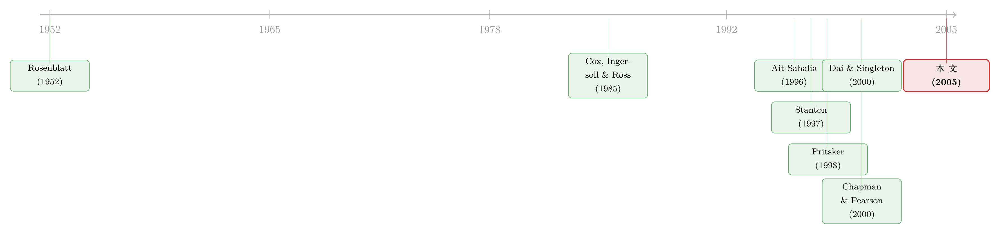

残差不会撒谎：一把能戳穿利率模型的「万能尺」
本文读的是 Hong & Li (2005, Review of Financial Studies)：他们把一个连续时间模型的「转移密度」当作一台显微镜，用「概率积分变换」把任意一个模型的数据残差「漂白」成应当是 i.i.d. U[0,1] 的序列，再用一个非参数核估计去检验它是否真的「又独立又均匀」。这把尺子对数据里的持续相关性免疫，在小样本里表现极好，而且几乎对所有连续时间模型通用。用它一量，所有单变量扩散模型在欧洲美元利率上全军覆没，而「非线性漂移」并没有真正改善拟合——这恰恰推翻了上一代非参数检验最出名的那个结论。
1 一个让整条文献「翻车」的小样本
故事得从一桩学术公案讲起。
上世纪九十年代，连续时间模型（continuous-time model）正是金融计量的当红炸子鸡。从 Black-Scholes (1973) 的期权定价，到 Cox, Ingersoll, and Ross (1985, CIR) 的利率期限结构，大家都默认那些关键的经济变量——利率、汇率、股价——服从某个扩散过程 (diffusion process)。可问题是，经济理论从来不告诉你这个过程长什么样；它只说「有一个漂移、有一个扩散」，至于函数形式，研究者往往是为了能解出封闭形式的定价公式，才挑了一个「方便的」设定。
那么，一个自然的问题是：你挑的这个设定，到底对不对？
1996 年，Ait-Sahalia 在一篇开创性的工作里给出了第一个真正意义上的非参数检验 (nonparametric test)。他注意到一件很漂亮的事：一个时齐扩散过程的漂移函数和扩散函数，会完全决定它的边际密度 (marginal density)。于是他把一个模型隐含的边际密度，和一个不带任何假设的核估计 (kernel estimator) 摆在一起比，差得太多就拒绝。用这把尺子去量每天的欧洲美元利率，他把当时所有线性漂移的模型都拒了，并且抛出了一句后来被无数次引用的话：「拒绝现有模型的主要原因，是漂移的强非线性。」紧接着，Stanton (1997) 用非参数核回归，也在利率数据里看到了一个显著的非线性漂移。
利率的漂移是非线性的——这几乎要成为一条「定论」了。
但真正关键的一步，是有人开始追问这把尺子本身准不准。Pritsker (1998) 做了一件很煞风景的事：他拿一个经验上很现实的 Vasicek (1977) 模型去模拟数据，然后看 Ait-Sahalia (1996) 的检验在有限样本里表现如何。结论让人脊背发凉——检验严重「过度拒绝」(overreject)，而且要让渐近理论真正靠得住，需要 2755 年的日度数据。两千七百多年！与此同时，Chapman and Pearson (2000) 指出，Ait-Sahalia 和 Stanton 用的非参数方法在数据边界附近是有偏的，而这种边界偏差，本身就足以「凭空」造出一个看起来非线性的漂移。
于是张力出现了：利率数据的一个根本特征，就是持续的序列相关性 (persistent dependence)——今天的利率和昨天高度相关。而 Ait-Sahalia 那套方法恰恰对这种相关性极其敏感，慢得要命的非参数收敛速度又雪上加霜。Pritsker 和 Chapman-Pearson 的批评，几乎是把「非参数方法到底能不能用在金融上」这个问题打上了一个大大的问号。
Hong and Li (2005) 这篇文章，就是冲着这个问号来的。
2 核心一招：把残差「漂白」成 i.i.d. U[0,1]
他们的破局之道，说穿了只有一个想法，但这个想法贯穿全文，值得反复�玩味。
Ait-Sahalia 用的是边际密度。边际密度有个致命的软肋：它只看「利率取各个值的频率」，却完全不看「时间上的动态」。换句话说，两个动态结构完全不同的模型，可能有一模一样的边际密度，于是基于边际密度的检验对它们束手无策。
那应该看什么？答案是转移密度 (transition density)——给定昨天的利率 \(X_s=y\)，今天的利率 \(X_t=x\) 的条件密度 \(p_0(x,t\mid y,s)\)。转移密度刻画的是过程的全部动态，而不只是它的「长期分布」。一个模型对不对，本质上就是问：它给出的转移密度族 \(p(x,t\mid y,s,\theta)\)，能不能在某个参数 \(\theta_0\) 上和真实的转移密度对上。
到这里都还只是「换个对象比」。真正巧妙的，是下面这一步。
他们没有去硬碰硬地估计转移密度本身（那比边际密度收敛得更慢，著名的「维数灾难」），而是借用了一个古老的恒等式——Rosenblatt (1952) 的概率积分变换 (probability integral transform, PIT)。对每一个观测，定义
$$Z_t(\theta) \equiv \int_{-\infty}^{X_{t\Delta}} p\big[x, t\Delta \mid X_{(t-1)\Delta}, (t-1)\Delta, \theta\big]\, dx, \qquad t=1,\dots,n.$$
直觉是这样的：如果模型是对的（即存在某个 \(\theta_0\) 让模型转移密度等于真实转移密度），那么把每个观测「喂」进它自己的条件累积分布里，得到的这串数 \(\{Z_t\}\) 就会是独立同分布的均匀分布，即 i.i.d. U[0,1]。作者把 \(\{Z_t(\theta)\}\) 称为模型的「广义残差」(generalized residuals)。
这个名字起得极好。它把一个连续时间模型设定是否正确的问题，干净利落地翻译成了一句话——
i.i.d. 这部分，刻画的是模型动态设定是否正确；U[0,1] 这部分，刻画的是模型边际分布设定是否正确。两者合在一起，才是「这个模型对不对」的完整答案。
妙处在于：原始利率 \(\{X_{t\Delta}\}\) 是高度相关的，但在模型正确的前提下，广义残差 \(\{Z_t\}\) 是独立的。Pritsker 和 Chapman-Pearson 担心的那个「持续相关性毁掉小样本」的魔咒，在变换之后凭空消失了——因为我们现在要做核估计的对象，本身就不再相关了。这就是为什么作者反复强调，他们的检验对数据里的持续相关性是稳健的。这一个变换，几乎一举回应了上一代非参数方法的两大软肋。
接着，一个自然的问题是：怎么检验「i.i.d. U[0,1]」这个联合假设？
3 检验统计量：一步步搭出来
有人会说，用经典的 Kolmogorov–Smirnov 检验不就行了？不行。KS 检验是在「已经独立」的假设下查 U[0,1]，它根本不检验独立性本身，于是那些「边际是均匀、但时间上相关」的备择假设会被它轻松放过。我们要的是同时检验 i.i.d. 和 U[0,1]。
作者的做法，是去比较广义残差的联合密度和「两个独立 U[0,1] 的乘积」（也就是常数 1）。对任意滞后阶 \(j>0\)，用核估计搭出二维联合密度：
$$\hat{g}_j(z_1,z_2) \equiv (n-j)^{-1}\sum_{t=j+1}^{n} K_h(z_1,\hat{Z}_t)\,K_h(z_2,\hat{Z}_{t-j}),$$
这里 \(\hat{Z}_t = Z_t(\hat\theta)\)，而 \(\hat\theta\) 只需要是任意一个 \(\sqrt{n}\)-相合估计量即可。然后用一个二次型度量它离常数 1 有多远：
$$\hat{M}(j) \equiv \int_0^1\!\!\int_0^1 \big[\hat{g}_j(z_1,z_2)-1\big]^2\, dz_1\, dz_2.$$
最后，把 \(\hat{M}(j)\) 适当地「中心化、标准化」，得到核心的检验统计量：
作者在附录的 Theorem 1 中证明：在模型设定正确时，当 \(n\to\infty\)，
$$\hat{Q}(j) \;\xrightarrow{d}\; N(0,1).$$
而在模型错误（\(\{Z_t,Z_{t-j}\}\) 不独立或不是 U[0,1]）时，\(\hat{Q}(j) \xrightarrow{p} +\infty\)（Theorem 3）。所以这是一个单边右尾检验：拿 \(\hat{Q}(j)\) 和 \(N(0,1)\) 的上分位点 \(C_\alpha\) 比，比如 \(C_{0.05}=1.645\)，超过就拒绝。更妙的是，不同滞后阶的 \(\hat{Q}(i)\) 和 \(\hat{Q}(j)\)（\(i\neq j\)）渐近独立（Theorem 2），于是你可以同时用一组不同滞后的统计量，去定位「到底在哪个滞后上违背了 i.i.d.」。
这里还藏着一个不起眼但要命的技术细节——边界偏差 (boundary bias)。
因为 \(\{Z_t\}\) 在 0 和 1 附近会被「截断」，标准核估计在边界处是有偏的。而对金融数据来说，边界区域偏偏是我们最关心的地方——它装的正是利率的尾部分布！作者算了一笔账：若用某个常见带宽，当 \(n=100,500,5000\) 时，分别有约 23%、20%、10% 的 U[0,1] 样本落在边界区。扔掉它们（trimming）等于扔掉了关于尾部最宝贵的信息；用 Chapman-Pearson 推荐的 jackknife 核又可能估出负的密度、且方差偏大。于是他们设计了一个边界修正核 \(K_h(x,y)\)：在内部 \([h,1-h]\) 用普通核，在两端用一个带分母修正的核，让密度估计在整个 $[0,1]$ 上一致渐近无偏，还始终非负。
（关于「换一把更合适的尺子，旧结论就被推翻」的故事，利率领域里并不少见，可参见《利率会不会「拐弯」？——一个被换了把尺子量出来的老问题》与《波动率到底藏在哪里？》。）
4 不只是「拒绝」：分别诊断misspecification的来源
一个好的检验不该只会说「拒绝」，还应该告诉你错在哪。这正是这篇文章第三个被低估的贡献。
广义残差里其实藏着极丰富的信息：它的边际分布偏离 U[0,1]，说明模型对稳态分布（偏度、峰度）刻画不准；它的各阶矩在时间上的自相关，则告诉你模型对动态的哪一面没抓住。Diebold, Gunther, and Tay (1998) 在密度预测评估里用直方图和自相关图来做这件事，但那些图形方法忽略了参数估计 \(\hat\theta\) 带来的不确定性。
Hong-Li 给出了一套严谨的「分别推断」(separate inference) 统计量，专门盯住广义残差各次幂之间的互相关：
$$M(m,l) \equiv \Bigg[\sum_{j=1}^{n-1} w^2(j/p)(n-j)\,\hat{\rho}_{ml}^2(j) - \sum_{j=1}^{n-1} w^2(j/p)\Bigg] \Big/ \Bigg[2\sum_{j=1}^{n-2} w^4(j/p)\Bigg]^{1/2},$$
其中 \(\hat{\rho}_{ml}(j)\) 是 \(\hat{Z}_t^m\) 与 \(\hat{Z}_{t-|j|}^l\) 的样本互相关，\(w(\cdot)\) 是给高阶滞后打折的权重函数（如 Bartlett 核）。换上不同的 \((m,l)\)，你就能分别检验「条件均值」「条件方差」「条件偏度」等不同动态侧面——这恰好补上了 Gallant and Tauchen (1996) 那套 EMM 个体 \(t\) 检验之外的盲区。
5 实证：所有单变量模型「全军覆没」，非线性漂移并不重要
理论搭好，接下来是动真格的。
第一战场，还是 Ait-Sahalia (1996) 用过的那份每日欧洲美元利率数据。这里有个微妙的对照：若用 Pritsker (1998) 替 Ait-Sahalia 检验校准出来的经验临界值，你其实不会拒绝 CKLS（Chan, Karolyi, Longstaff, and Sanders, 1992）模型，也不会拒绝 Ait-Sahalia 自己的非线性漂移模型——也就是说，旧检验一旦把小样本偏差修正掉，反而「放过」了这些模型。
但 Hong-Li 的全能检验 (omnibus test) 斩钉截铁地拒绝了所有单变量扩散模型。更关键的是那句反转的结论：加入非线性漂移，并没有显著改善拟合优度。绕了一大圈，上一代非参数检验最出名的那个「漂移强非线性」结论，在一把更可靠的尺子下站不住了——利率模型真正的毛病，多半不在漂移这一项上。
第二战场是月度美国国债收益率，跨度长达约 50 年。作者把 Dai and Singleton (2000) 与 Duffee (2002) 的三因子「完全仿射」(completely affine) 和「本质仿射」(essentially affine) 模型搬上来，结果是压倒性地拒绝。不过这里有个有意思的纹理：那些在刻画状态变量条件方差、相关性以及风险市场价格上更灵活的仿射模型，表现最好，而且它们对收益率曲线的中段和长段拟合得比短端更好。换句话说，麻烦集中在短端——这与利率短端那些「locally unit root」式的怪异行为是呼应的。
这篇文章的「通用性」绝非口头说说。因为正则性条件是加在转移密度上、而不是底层随机微分方程上，所以这套检验天然适用于时齐扩散之外的一大类模型：时变扩散、GARCH、随机波动率、机制转换、跳跃-扩散，乃至多变量扩散。更难得的是，许多金融模型是非嵌套的、估计方法还各不相同，过去几乎无法正式比较优劣；而「广义残差离 i.i.d. U[0,1] 有多远」恰好提供了一把统一的标尺，让不同模型在同一个度量下排座次。
6 文献脉络
把这条线索捋一遍，你会看到一个非常清晰的「正—反—合」。
正题是连续时间模型本身的繁荣：Black and Scholes (1973)、Vasicek (1977)、CIR（Cox, Ingersoll, and Ross, 1985）奠定了用扩散过程刻画利率与资产价格的范式；Lo (1988) 则点醒大家——直接估计离散化版本会得到不相合的参数，于是估计方法百花齐放。
反题是设定检验的觉醒：Ait-Sahalia (1996) 用边际密度做出第一个非参数检验，Stanton (1997) 用核回归呼应，二者都指向「非线性漂移」。紧接着 Pritsker (1998) 和 Chapman and Pearson (2000) 从有限样本与边界偏差两个角度，把这套方法的可靠性整个掀翻。
合题便是 Hong and Li (2005)：他们不绕开非参数方法，而是借 Rosenblatt (1952) 的概率积分变换、以及 Diebold, Gunther, and Tay (1998) 在密度预测评估里的思路，把检验对象从「相关的利率」换成「不相关的广义残差」，再加边界修正核，一举把稳健性、通用性和小样本表现都补齐——顺便用更可靠的证据，回到 Dai and Singleton (2000) 等仿射模型的擂台上重新裁判。

7 评论与延伸（Q&A + 研究方向）
(a) 几个可能的疑问
Q：转移密度大多没有封闭形式，那 \(Z_t\) 到底怎么算？
这正是作者坦承的实操难点，但并非死结。文中明确列了几条路：Pedersen (1995) 与 Brandt and Santa-Clara (2002) 的模拟法、Ait-Sahalia (2002a,b) 的 Hermite 展开、以及对仿射扩散用 Duffie, Pedersen, and Singleton (2003) 的封闭近似或 Singleton (2001) 的经验特征函数法。换言之，转移密度可以被高精度地近似出来，检验才得以落地。
Q：和 Ait-Sahalia (1996) 的边际密度检验，本质区别是什么？
边际密度只看「利率分布的形状」，对那些边际相同、但动态不同的备择假设是盲的；转移密度看的是「全部动态」。再加上概率积分变换把相关数据漂白成 i.i.d.，所以这套检验既能抓到边际检验抓不到的动态错误，又对持续相关性免疫——这是两点叠加的收益。
Q：为什么是单边右尾检验？负的 \(\hat{Q}(j)\) 难道不该警惕？
因为统计量是「残差联合密度偏离均匀」的二次型经中心化、标准化得到的。模型错时它发散到 \(+\infty\)；样本足够大时，负值只会在原假设成立时出现。所以用 \(N(0,1)\) 的上分位点（如 1.645）做临界值是合适的。
Q：「检验拒绝了所有模型」会不会只是统计功效太强、鸡蛋里挑骨头？
这是所有强力设定检验都要面对的诘问。作者的回应在于：模拟显示该检验在小样本里size（犯第一类错误的概率）也很端正，并非靠虚高的拒绝率取胜；而且配套的分别推断能告诉你拒绝来自哪个动态侧面（如短端、条件方差），让「拒绝」变得有信息量，而不是一句空洞的否定。
Q：它说非线性漂移不重要，那利率模型真正缺的是什么？
文章的实证暗示，问题更多在收益率曲线的短端以及条件二阶矩（波动率、相关性）的刻画上——表现最好的恰是那些对条件方差和风险价格更灵活的仿射模型。这与「波动率被建模充分与否」这条线高度相关（可参见《收益率曲线拟合得再好，也可能对波动率「充耳不闻」》）。
Q：参数估计的不确定性，难道不会污染检验的渐近分布？
这是该方法一个极漂亮的性质：只要 \(\hat\theta\) 是 \(\sqrt{n}\)-相合的，它的抽样波动对 \(\hat{Q}(j)\) 的渐近分布没有影响。这意味着你不必动用 MLE 这种最有效率却往往难求的估计量，挑一个方便的次优估计量即可——大大降低了实操门槛。
(b) 几个可能的研究问题与提案
-
把「广义残差」搬到公司债的违约强度模型上。 【经济故事】信用风险的简约式模型 (reduced-form) 本质上也是一个连续时间过程——违约强度 \(\lambda_t\) 常被设成 CIR 型扩散。它们对不对，几乎没人用统一的设定检验查过。把 PIT 用在信用利差或违约强度的转移密度上，能直接检验「这些定价模型抓住了利差动态没有」。 【可行性】中。转移密度需要近似，但仿射信用模型恰好有 Duffie-Pedersen-Singleton 式的封闭近似；数据可用 TRACE 利差或 CDS。难点在违约稀疏、样本相对短。
-
危机期间的「广义残差」会不会突然变得相关？ 【经济故事】如果在平静期模型还过得去、危机期残差突然显著偏离 i.i.d.，那这本身就是一个对「模型在尾部失灵」的诊断信号，可以做成一个滚动的「模型可靠性指标」。 【可行性】高。把 \(\hat{Q}(j)\) 做成滚动窗口时间序列即可，方法现成；可用国债收益率或欧洲美元利率长样本。识别上要小心区分「真失灵」与「窗口太短导致的功效下降」。
-
用分别推断给多因子模型「做体检」，定位哪一段曲线出问题。 【经济故事】文中已发现仿射模型短端拟合差、中长端好。用 \(M(m,l)\) 对不同到期段的收益率分别做诊断，能把「模型错在哪个期限、错在均值还是方差」量化出来，指导下一代模型该往哪里加灵活性。 【可行性】高。统计量现成，国债收益率面板数据充足，纯方法应用。
-
外资主导的市场，利率/汇率过程是否更难被标准模型刻画？ 【经济故事】若一国债券由外资大量持有，资金流冲击可能让利率动态出现标准扩散抓不住的跳跃或机制转换。用这套对跳跃-扩散、机制转换都适用的检验，比较外资持有比例高低的市场，看模型设定错误的程度是否系统性更高。 【可行性】中。检验通用是优势，但需要跨国利率数据与外资持有比例，转移密度近似在带跳模型下更费力，识别上要控制宏观共同因子。
8 我的判断
先说贡献。这篇文章最让我欣赏的，不是某一个技术零件，而是那个翻译——把「连续时间模型设定是否正确」这个含混的大问题，翻译成「广义残差是不是 i.i.d. U[0,1]」这个干净、可检验、可分解的小问题。一招既解决了持续相关性的稳健性、又换来了对几乎所有动态模型的通用性，还顺手提供了「错在哪」的诊断工具。它对 Ait-Sahalia—Stanton 的「非线性漂移」结论的反转，也极具说服力——因为它正面回应了 Pritsker 和 Chapman-Pearson 的批评，而不是回避。
但识别上仍有可担忧之处。其一，整套检验的可靠性，寄生于转移密度近似的精度：近似误差会直接污染广义残差，而文章把这部分当作「已解决」处理，实证里近似误差对 \(\hat{Q}(j)\) 的传导其实值得更系统的敏感性分析。其二，渐近临界值在小样本里仍需谨慎——作者用模拟证明 size 端正，但带宽 \(h\) 和边界修正常数 \(A_h^0\) 的选择对有限样本结果有实际影响，而 \(A_h^0\) 那个「即便 \(n\to\infty\) 也不消失」的修正项，本身就提醒我们边界处的脆弱。其三，「拒绝一切」固然漂亮，却也让人想问：在所有模型都被拒之后，我们对「该信哪个」的指引，最终还是落回了相对拟合的比较，而非绝对的通过。
后续我最想看到的，是把这把尺子真正用到信用与外资两条线上去——尤其是在公司债违约强度模型和外资主导市场的利率动态上，看看那些被广泛使用的简约式与仿射设定，能不能扛得住广义残差的拷问。毕竟，残差不会撒谎。
参考文献
- Ait-Sahalia, Y. (1996). Testing Continuous-Time Models of the Spot Interest Rate. Review of Financial Studies 9(2), 385–426.
- Black, F., and M. Scholes (1973). The Pricing of Options and Corporate Liabilities. Journal of Political Economy 81(3), 637–654.
- Chan, K.C., G.A. Karolyi, F.A. Longstaff, and A.B. Sanders (1992). An Empirical Comparison of Alternative Models of the Short-Term Interest Rate. Journal of Finance 47(3), 1209–1227.
- Chapman, D., and N. Pearson (2000). Is the Short Rate Drift Actually Nonlinear? Journal of Finance 55(1), 355–388.
- Cox, J.C., J.E. Ingersoll, and S.A. Ross (1985). A Theory of the Term Structure of Interest Rates. Econometrica 53(2), 385–407.
- Dai, Q., and K. Singleton (2000). Specification Analysis of Affine Term Structure Models. Journal of Finance 55(5), 1943–1978.
- Diebold, F.X., T. Gunther, and A. Tay (1998). Evaluating Density Forecasts with Applications to Financial Risk Management. International Economic Review 39(4), 863–883.
- Duffee, G. (2002). Term Premia and Interest Rate Forecasts in Affine Models. Journal of Finance 57(1), 405–443.
- Gallant, A.R., and G. Tauchen (1996). Which Moments to Match? Econometric Theory 12(4), 657–681.
- Hong, Y., and H. Li (2005). Nonparametric Specification Testing for Continuous-Time Models with Applications to Term Structure of Interest Rates. Review of Financial Studies 18(1), 37–84.
- Lo, A.W. (1988). Maximum Likelihood Estimation of Generalized Ito Processes with Discretely Sampled Data. Econometric Theory 4(2), 231–247.
- Pritsker, M. (1998). Nonparametric Density Estimation and Tests of Continuous Time Interest Rate Models. Review of Financial Studies 11(3), 449–487.
- Rosenblatt, M. (1952). Remarks on a Multivariate Transformation. Annals of Mathematical Statistics 23(3), 470–472.
- Stanton, R. (1997). A Nonparametric Model of Term Structure Dynamics and the Market Price of Interest Rate Risk. Journal of Finance 52(5), 1973–2002.
- Vasicek, O. (1977). An Equilibrium Characterization of the Term Structure. Journal of Financial Economics 5(2), 177–188.